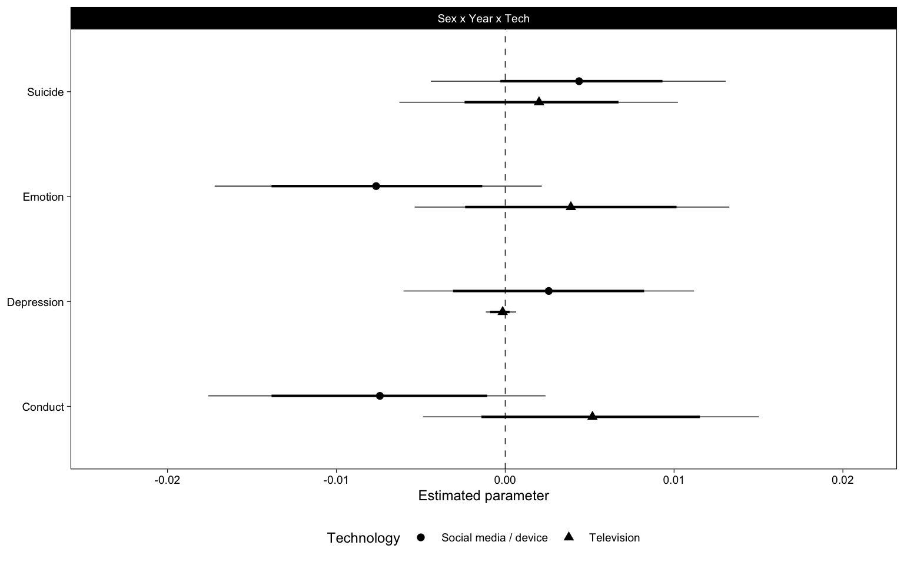

Chapter 7 Bayesian Generalized Linear Mixed Model
For each dataset and outcome, we fit a GLMM using brms, in order to do full bayesian inference. These models take a while to run.
7.1 Data
For US, we also isolate between- and within-person variables.
# Within-person center variables (Vuorre & Bolger, 2017)
us <- bmlm::isolate(us, "pidp", "TV", which = "both", z = TRUE)
us <- bmlm::isolate(us, "pidp", "SM", which = "both", z = TRUE)
us <- us %>% select(-TV, -SM)
# We focus on between-person relations so rename those back
us <- us %>% rename(TV = TV_cb, SM = SM_cb)YRBS is in long format wrt items
7.2 Models
7.2.1 Estimate
MTF: Single level model US: Random intercepts for participants. 85% of participants have only 1 or 2 observations, so random slopes without strong priors are not a good idea. YRBS: Full item-specific random effects.
fit <- function(data, name, x, y, iter = 1000, chains = 12, cores = 12) {
data <- drop_na(data, all_of(x), all_of(y))
data <- mutate(data, Year = Year - 2017)
if (name=="YRBS") {
data <- data %>%
mutate(across(all_of(x), ~as.numeric(scale(.))))
ml1 <- brm(
str_glue("{y} ~ Sex * Year * {x} + (Sex * Year * {x} | item)"),
family = bernoulli("probit_approx"),
control = list(adapt_delta = .98),
prior = prior(student_t(9, 0, 1), class = "sd") +
prior(normal(0, 1), class = "b"),
inits = "0",
data = data, chains = chains, iter = iter, cores = cores,
file = str_glue("models/brm-{name}-{x}-{y}-ml1-probit")
)
} else if (name=="MTF") {
data <- data %>%
mutate(across(c(all_of(x), all_of(y)), ~as.numeric(scale(.))))
ml1 <- brm(
str_glue("{y} ~ Sex * Year * {x}"),
control = list(adapt_delta = .9),
data = data, chains = chains, iter = iter, cores = cores,
file = str_glue("models/brm-{name}-{x}-{y}-ml1")
)
} else if (name=="US") {
data <- data %>%
mutate(across(c(all_of(x), all_of(y)), ~as.numeric(scale(.))))
ml1 <- brm(
str_glue("{y} ~ Sex * Year * {x} + (1 | pidp)"),
control = list(adapt_delta = .9),
data = data, chains = chains, iter = iter, cores = cores,
file = str_glue("models/brm-{name}-{x}-{y}-ml1")
)
}
tibble(
data = name,
Technology = x,
Outcome = y,
ml1 = list(ml1)
)
}x1 <- fit(yrbs, "YRBS", "TV", "Suicide")
x2 <- fit(yrbs, "YRBS", "DV", "Suicide")
x3 <- fit(mtf, "MTF", "TV", "Depression")
x4 <- fit(mtf, "MTF", "SM", "Depression")
x5 <- fit(us, "US", "SM", "Emotion")
x6 <- fit(us, "US", "SM", "Conduct")
x7 <- fit(us, "US", "TV", "Emotion")
x8 <- fit(us, "US", "TV", "Conduct")7.2.2 Results
probs <- c(.025, .1, .9, .975)
pars <- fits %>%
mutate(
p = map(
ml1, ~posterior_summary(., pars = "^b_", probs = probs) %>%
as.data.frame() %>%
rownames_to_column("Parameter") %>%
tibble()
)
) %>%
unnest(p) %>%
select(-ml1)
b_Year <- pars %>%
filter(Parameter == "b_Year") %>%
mutate(Parameter = "Year")
b_Tech <- pars %>%
filter(Parameter %in% c("b_TV", "b_DV", "b_SM")) %>%
mutate(Parameter = "Technology")
b_Interaction <- pars %>%
filter(Parameter %in% c("b_Year:TV", "b_Year:DV", "b_Year:SM")) %>%
mutate(Parameter = "Year by Technology Interaction")
p1 <- bind_rows(b_Year, b_Tech, b_Interaction) %>%
mutate(Outcome = fct_rev(Outcome)) %>%
# Fill points based on if 95%CI includes zero
mutate(
Zero = ifelse(
sign(Q2.5) == sign(Estimate) & sign(Estimate) == sign(Q97.5),
"*", ""
)
) %>%
mutate(
Parameter = factor(Parameter, levels = c("Year", "Technology", "Year by Technology Interaction"))
) %>%
ggplot(aes(Estimate, Outcome, shape = Technology, fill = Zero)) +
scale_shape_manual(values = c(21, 22)) +
scale_fill_manual(values = c("white", "black"), guide = FALSE) +
scale_x_continuous(
"Parameter estimate",
breaks = scales::pretty_breaks(),
expand = expansion(.15)
) +
geom_vline(xintercept = 0, lty = 2, size = .25) +
geom_linerangeh(
aes(xmin = Q2.5, xmax = Q97.5), size = .25,
position = position_dodge2v(.5), show.legend = FALSE
) +
geom_linerangeh(
aes(xmin = Q10, xmax = Q90), size = .75,
position = position_dodge2v(.5), show.legend = FALSE
) +
geom_point(
size = 2, position = position_dodge2v(.5),
) +
facet_wrap("Parameter", scales = "free_x", nrow = 1) +
theme(
legend.position = "right",
axis.title.y = element_blank(),
panel.spacing.x = unit(12, "pt")
)
((p1 %+%
filter(p1$data, Parameter %in% c("Technology")) +
theme(axis.title.x = element_blank())) /
p1 %+% filter(p1$data, Parameter == "Year by Technology Interaction")) +
plot_layout(guides = "collect") &
theme(legend.position = "right")
# Get YRBS item-specific effects
tmp1 <- slice(fits, 1:2) %>%
mutate(
o = map(ml1, ~rownames_to_column(as.data.frame(coef(.)$item[,,7])))
) %>%
unnest(o)
tmp <- fits %>%
mutate(
p = map(
ml1, ~posterior_summary(., pars = "b_Year:[TV|SM|DV]") %>%
as.data.frame() %>%
rownames_to_column() %>%
tibble()
)
) %>%
unnest(p)
tmp %>%
ggplot(aes(Estimate, Outcome, col = Outcome)) +
scale_color_brewer(palette = "Set1") +
scale_x_continuous(
"Linear interaction estimate (±95%CI)",
breaks = scales::pretty_breaks(),
expand = expansion(.2)
) +
geom_vline(xintercept = 0, size = .25, lty = 2) +
ggstance::geom_pointrangeh(
shape = 21, fill = "white", fatten = 3,
aes(xmin=Q2.5, xmax=Q97.5)
) +
# ggstance::geom_pointrangeh(
# data = tmp1, aes(xmin = Q2.5, xmax = Q97.5),
# size = .25, fatten = 1,
# position = ggstance::position_dodge2v(.25)
# ) +
facet_wrap("Technology") +
theme(
axis.title.y = element_blank(),
legend.position = "none",
legend.text = element_text(size = 8)
)# Sex
pars %>%
filter(str_detect(Parameter, "Sex1:Year:")) %>%
mutate(Parameter = "Sex x Year x Tech") %>%
ggplot(aes(Estimate, Outcome, shape = Technology)) +
scale_color_brewer(palette = "Set1") +
scale_x_continuous(
"Estimated parameter",
breaks = scales::pretty_breaks(),
expand = expansion(.25)
) +
geom_vline(xintercept = 0, lty = 2, size = .25) +
geom_linerangeh(
aes(xmin = Q2.5, xmax = Q97.5), size = .25,
position = position_dodge2v(.4), show.legend = FALSE
) +
geom_linerangeh(
aes(xmin = Q10, xmax = Q90), size = .75,
position = position_dodge2v(.4), show.legend = FALSE
) +
geom_point(
size = 2, position = position_dodge2v(.4)
) +
facet_wrap("Parameter", scales = "free_x", nrow = 1) +
theme(
legend.position = "bottom",
axis.title.y = element_blank(),
panel.spacing.x = unit(12, "pt")
)
## ─ Session info ───────────────────────────────────────────────────────────────
## setting value
## version R version 4.0.2 (2020-06-22)
## os macOS Catalina 10.15.7
## system x86_64, darwin17.0
## ui X11
## language (EN)
## collate en_GB.UTF-8
## ctype en_GB.UTF-8
## tz Europe/London
## date 2020-10-02
##
## ─ Packages ───────────────────────────────────────────────────────────────────
## package * version date lib
## abind 1.4-5 2016-07-21 [1]
## assertthat 0.2.1 2019-03-21 [1]
## backports 1.1.10 2020-09-15 [1]
## base64enc 0.1-3 2015-07-28 [1]
## bayesplot 1.7.2 2020-05-28 [1]
## blob 1.2.1 2020-01-20 [1]
## bmlm 1.3.11 2019-02-21 [1]
## bookdown 0.20 2020-06-23 [1]
## bridgesampling 1.0-0 2020-02-26 [1]
## brms * 2.13.10 2020-09-29 [1]
## Brobdingnag 1.2-6 2018-08-13 [1]
## broom 0.7.0.9001 2020-07-23 [1]
## callr 3.4.4 2020-09-07 [1]
## cellranger 1.1.0 2016-07-27 [1]
## cli 2.0.2 2020-02-28 [1]
## coda 0.19-3 2019-07-05 [1]
## codetools 0.2-16 2018-12-24 [1]
## colorspace 1.4-1 2019-03-18 [1]
## colourpicker 1.1.0 2020-09-14 [1]
## crayon 1.3.4 2017-09-16 [1]
## crosstalk 1.1.0.1 2020-03-13 [1]
## curl 4.3 2019-12-02 [1]
## DBI 1.1.0 2019-12-15 [1]
## dbplyr 1.4.4 2020-05-27 [1]
## digest 0.6.25 2020-02-23 [1]
## dplyr * 1.0.2 2020-08-18 [1]
## DT 0.15 2020-08-05 [1]
## dygraphs 1.1.1.6 2018-07-11 [1]
## ellipsis 0.3.1 2020-05-15 [1]
## emmeans 1.5.1 2020-09-18 [1]
## estimability 1.3 2018-02-11 [1]
## evaluate 0.14 2019-05-28 [1]
## fansi 0.4.1 2020-01-08 [1]
## farver 2.0.3 2020-01-16 [1]
## fastmap 1.0.1 2019-10-08 [1]
## forcats * 0.5.0 2020-03-01 [1]
## fs 1.5.0 2020-07-31 [1]
## future * 1.19.1 2020-09-22 [1]
## generics 0.0.2 2018-11-29 [1]
## ggplot2 * 3.3.2 2020-06-19 [1]
## ggridges 0.5.2 2020-01-12 [1]
## ggstance * 0.3.4 2020-04-02 [1]
## globals 0.13.0 2020-09-17 [1]
## glue 1.4.2 2020-08-27 [1]
## gridExtra 2.3 2017-09-09 [1]
## gtable 0.3.0 2019-03-25 [1]
## gtools 3.8.2 2020-03-31 [1]
## haven 2.3.1 2020-06-01 [1]
## hms 0.5.3 2020-01-08 [1]
## htmltools 0.5.0 2020-06-16 [1]
## htmlwidgets 1.5.1 2019-10-08 [1]
## httpuv 1.5.4 2020-06-06 [1]
## httr 1.4.2 2020-07-20 [1]
## igraph 1.2.5 2020-03-19 [1]
## inline 0.3.16 2020-09-06 [1]
## jsonlite 1.7.1 2020-09-07 [1]
## knitr * 1.30 2020-09-22 [1]
## later 1.1.0.1 2020-06-05 [1]
## lattice 0.20-41 2020-04-02 [1]
## lifecycle 0.2.0 2020-03-06 [1]
## listenv 0.8.0 2019-12-05 [1]
## loo 2.3.1 2020-07-14 [1]
## lubridate 1.7.9 2020-06-08 [1]
## magrittr 1.5 2014-11-22 [1]
## markdown 1.1 2019-08-07 [1]
## MASS 7.3-53 2020-09-09 [1]
## Matrix 1.2-18 2019-11-27 [1]
## matrixStats 0.57.0 2020-09-25 [1]
## mime 0.9 2020-02-04 [1]
## miniUI 0.1.1.1 2018-05-18 [1]
## modelr 0.1.8 2020-05-19 [1]
## multcomp 1.4-13 2020-04-08 [1]
## munsell 0.5.0 2018-06-12 [1]
## mvtnorm 1.1-1 2020-06-09 [1]
## nlme 3.1-149 2020-08-23 [1]
## pacman 0.5.1 2019-03-11 [1]
## patchwork * 1.0.1 2020-06-22 [1]
## pillar 1.4.6 2020-07-10 [1]
## pkgbuild 1.1.0 2020-07-13 [1]
## pkgconfig 2.0.3 2019-09-22 [1]
## plyr 1.8.6 2020-03-03 [1]
## prettyunits 1.1.1 2020-01-24 [1]
## processx 3.4.4 2020-09-03 [1]
## promises 1.1.1 2020-06-09 [1]
## ps 1.3.4 2020-08-11 [1]
## purrr * 0.3.4 2020-04-17 [1]
## R6 2.4.1 2019-11-12 [1]
## Rcpp * 1.0.5 2020-07-06 [1]
## RcppParallel 5.0.2 2020-06-24 [1]
## readr * 1.3.1 2018-12-21 [1]
## readxl 1.3.1 2019-03-13 [1]
## reprex 0.3.0 2019-05-16 [1]
## reshape2 1.4.4 2020-04-09 [1]
## rlang 0.4.7 2020-07-09 [1]
## rmarkdown 2.4.0 2020-09-11 [1]
## rsconnect 0.8.16 2019-12-13 [1]
## rstan 2.21.3 2020-09-29 [1]
## rstantools 2.1.1 2020-07-06 [1]
## rstudioapi 0.11 2020-02-07 [1]
## rvest 0.3.6 2020-07-25 [1]
## sandwich 2.5-1 2019-04-06 [1]
## scales 1.1.1 2020-05-11 [1]
## sessioninfo * 1.1.1 2018-11-05 [1]
## shiny 1.5.0 2020-06-23 [1]
## shinyjs 2.0.0 2020-09-09 [1]
## shinystan 2.5.0 2018-05-01 [1]
## shinythemes 1.1.2 2018-11-06 [1]
## StanHeaders 2.21.0-6 2020-08-16 [1]
## stringi 1.5.3 2020-09-09 [1]
## stringr * 1.4.0 2019-02-10 [1]
## survival 3.2-3 2020-06-13 [1]
## TH.data 1.0-10 2019-01-21 [1]
## threejs 0.3.3 2020-01-21 [1]
## tibble * 3.0.3 2020-07-10 [1]
## tidyr * 1.1.2 2020-08-27 [1]
## tidyselect 1.1.0 2020-05-11 [1]
## tidyverse * 1.3.0 2019-11-21 [1]
## V8 3.2.0 2020-06-19 [1]
## vctrs 0.3.4 2020-08-29 [1]
## withr 2.3.0 2020-09-22 [1]
## xfun 0.18 2020-09-29 [1]
## xml2 1.3.2 2020-04-23 [1]
## xtable 1.8-4 2019-04-21 [1]
## xts 0.12.1 2020-09-09 [1]
## yaml 2.2.1 2020-02-01 [1]
## zoo 1.8-8 2020-05-02 [1]
## source
## CRAN (R 4.0.0)
## CRAN (R 4.0.0)
## CRAN (R 4.0.2)
## CRAN (R 4.0.0)
## CRAN (R 4.0.0)
## CRAN (R 4.0.0)
## CRAN (R 4.0.0)
## CRAN (R 4.0.2)
## CRAN (R 4.0.0)
## Github (paul-buerkner/brms@9f75e2d)
## CRAN (R 4.0.0)
## Github (tidymodels/broom@7db1139)
## CRAN (R 4.0.2)
## CRAN (R 4.0.0)
## CRAN (R 4.0.0)
## CRAN (R 4.0.0)
## CRAN (R 4.0.2)
## CRAN (R 4.0.0)
## CRAN (R 4.0.2)
## CRAN (R 4.0.0)
## CRAN (R 4.0.0)
## CRAN (R 4.0.0)
## CRAN (R 4.0.0)
## CRAN (R 4.0.0)
## CRAN (R 4.0.0)
## CRAN (R 4.0.2)
## CRAN (R 4.0.2)
## CRAN (R 4.0.0)
## CRAN (R 4.0.0)
## CRAN (R 4.0.2)
## CRAN (R 4.0.0)
## CRAN (R 4.0.0)
## CRAN (R 4.0.0)
## CRAN (R 4.0.0)
## CRAN (R 4.0.0)
## CRAN (R 4.0.0)
## CRAN (R 4.0.2)
## CRAN (R 4.0.2)
## CRAN (R 4.0.0)
## CRAN (R 4.0.1)
## CRAN (R 4.0.0)
## CRAN (R 4.0.0)
## CRAN (R 4.0.2)
## CRAN (R 4.0.2)
## CRAN (R 4.0.0)
## CRAN (R 4.0.0)
## CRAN (R 4.0.0)
## CRAN (R 4.0.0)
## CRAN (R 4.0.0)
## CRAN (R 4.0.1)
## CRAN (R 4.0.0)
## CRAN (R 4.0.0)
## CRAN (R 4.0.2)
## CRAN (R 4.0.0)
## CRAN (R 4.0.2)
## CRAN (R 4.0.2)
## CRAN (R 4.0.2)
## CRAN (R 4.0.0)
## CRAN (R 4.0.2)
## CRAN (R 4.0.0)
## CRAN (R 4.0.0)
## CRAN (R 4.0.2)
## CRAN (R 4.0.1)
## CRAN (R 4.0.0)
## CRAN (R 4.0.0)
## CRAN (R 4.0.2)
## CRAN (R 4.0.2)
## CRAN (R 4.0.2)
## CRAN (R 4.0.0)
## CRAN (R 4.0.0)
## CRAN (R 4.0.0)
## CRAN (R 4.0.0)
## CRAN (R 4.0.0)
## CRAN (R 4.0.0)
## CRAN (R 4.0.2)
## CRAN (R 4.0.0)
## CRAN (R 4.0.2)
## CRAN (R 4.0.2)
## CRAN (R 4.0.2)
## CRAN (R 4.0.0)
## CRAN (R 4.0.0)
## CRAN (R 4.0.0)
## CRAN (R 4.0.2)
## CRAN (R 4.0.1)
## CRAN (R 4.0.2)
## CRAN (R 4.0.0)
## CRAN (R 4.0.0)
## CRAN (R 4.0.2)
## CRAN (R 4.0.0)
## CRAN (R 4.0.0)
## CRAN (R 4.0.0)
## CRAN (R 4.0.0)
## CRAN (R 4.0.0)
## CRAN (R 4.0.2)
## Github (cpsievert/rmarkdown@b79fb4d)
## CRAN (R 4.0.0)
## Github (stan-dev/rstan@ae36e6f)
## CRAN (R 4.0.2)
## CRAN (R 4.0.0)
## CRAN (R 4.0.2)
## CRAN (R 4.0.0)
## CRAN (R 4.0.0)
## CRAN (R 4.0.0)
## CRAN (R 4.0.0)
## CRAN (R 4.0.2)
## CRAN (R 4.0.0)
## CRAN (R 4.0.0)
## CRAN (R 4.0.2)
## CRAN (R 4.0.2)
## CRAN (R 4.0.0)
## CRAN (R 4.0.2)
## CRAN (R 4.0.0)
## CRAN (R 4.0.0)
## CRAN (R 4.0.2)
## CRAN (R 4.0.2)
## CRAN (R 4.0.0)
## CRAN (R 4.0.0)
## CRAN (R 4.0.2)
## CRAN (R 4.0.2)
## CRAN (R 4.0.2)
## CRAN (R 4.0.2)
## CRAN (R 4.0.0)
## CRAN (R 4.0.0)
## CRAN (R 4.0.2)
## CRAN (R 4.0.0)
## CRAN (R 4.0.0)
##
## [1] /Library/Frameworks/R.framework/Versions/4.0/Resources/library